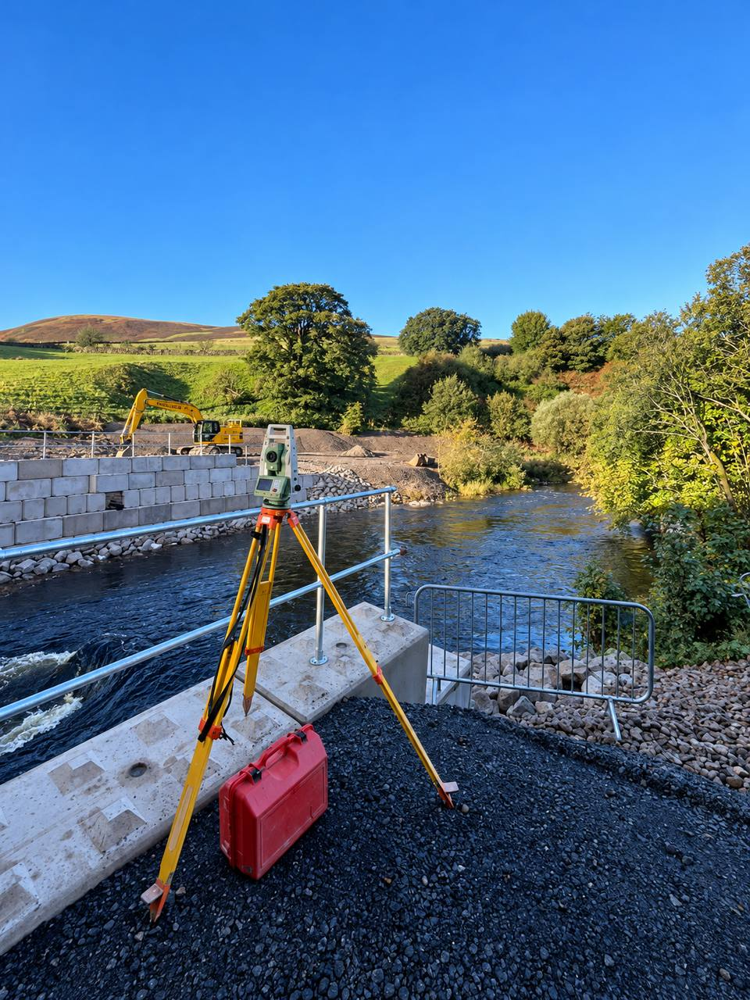
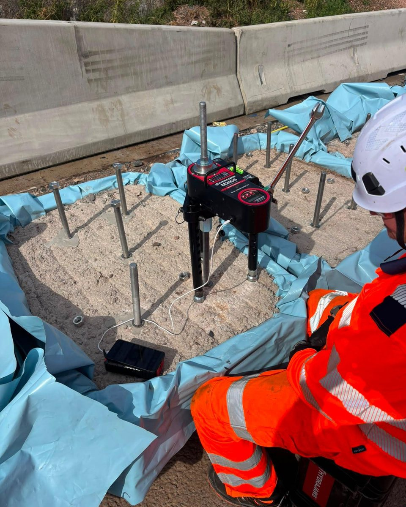
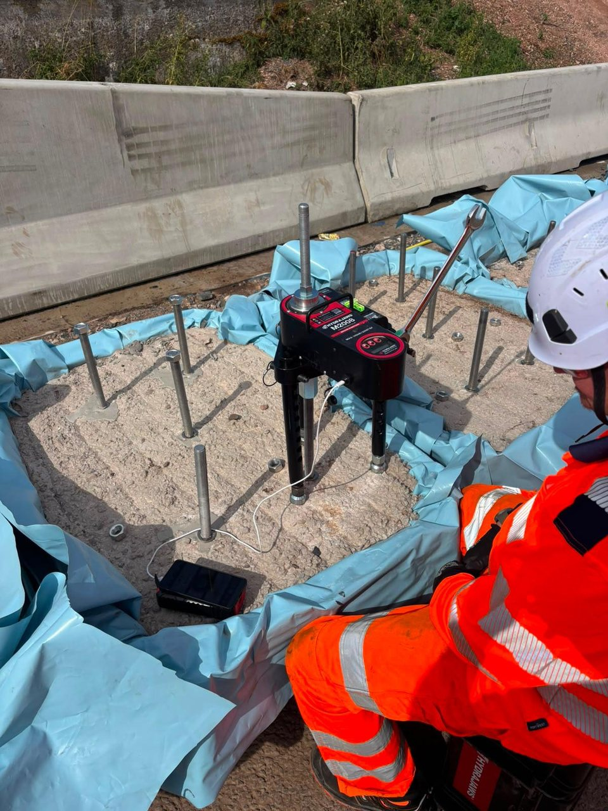
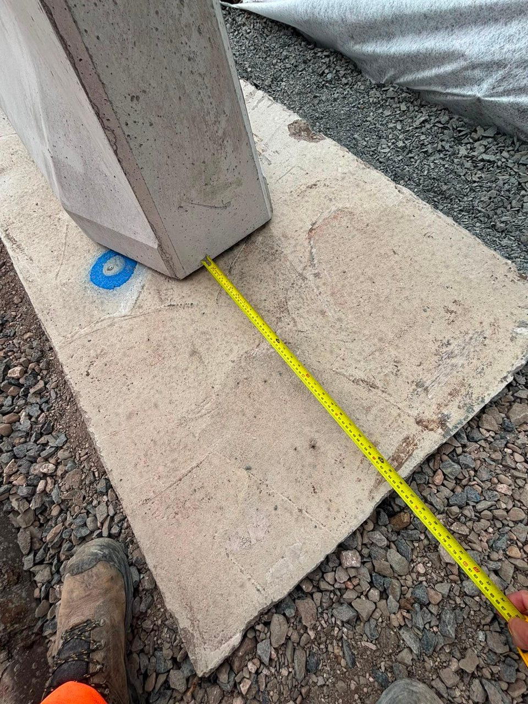
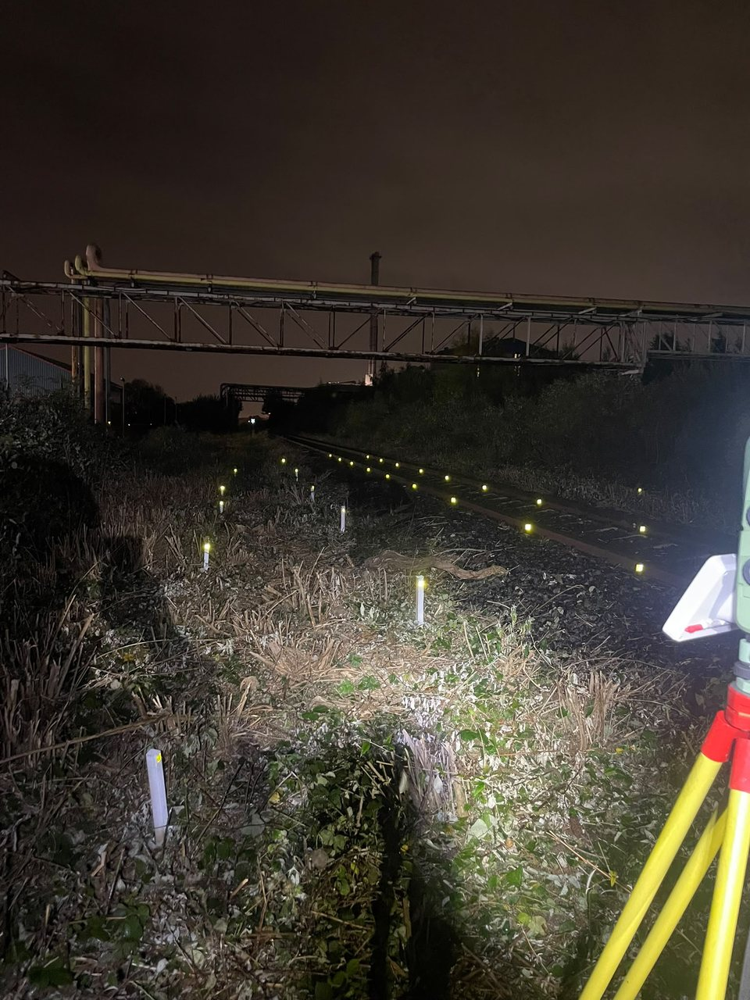
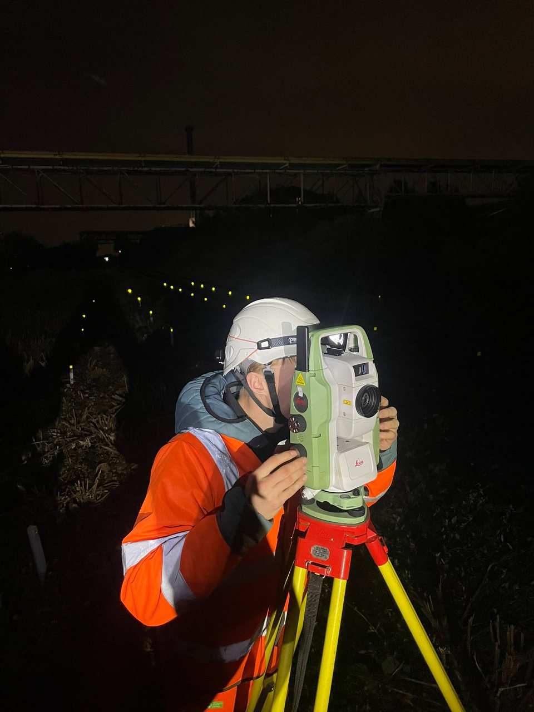
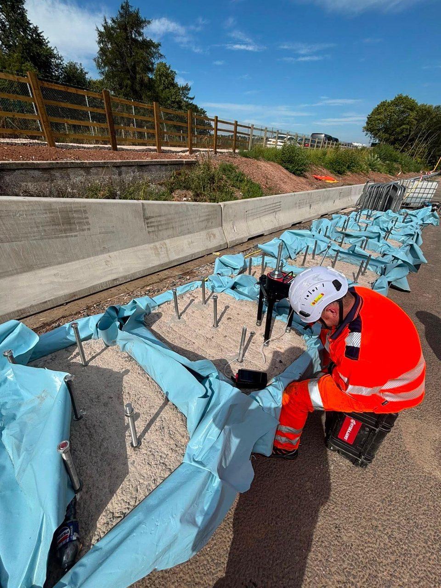

Survey Control & Construction Verification
Fixed survey points for the whole site to build from, and independent checks that the work matches the design.







Our control and verification services
Every trade on site sets out from the same control points, so those points need to be right. Ryan sets up and maintains the control, then checks and records the work against the design tolerances.
Survey Control & Precision Monitoring
Survey control networks that every trade builds from, with ongoing monitoring of structures, settlement, railways and bridges.
- Control networks: GNSS & total stationPrimary and secondary control networks set up using GNSS (satellite positioning) and total station observations.
- Precise levelling & closed traversesClosed traverse surveys and adjustments, precise levelling and coordinate transformations between site grids.
- Structural, settlement & rail monitoringStructural monitoring, settlement and movement monitoring, and railway and bridge monitoring.
- Fixed targets & repeat movement analysisMonitoring points installed and measured, with repeat surveys compared against the first (baseline) readings.
Construction Quality Assurance & As-Built Surveys
Independent checks that slabs, foundations, formations and earthworks meet the design tolerances, with as-built and quality assurance (QA) records.
- Independent verification & dimensional checksIndependent construction checks, plus dimensional and tolerance checks before follow-on trades start.
- Anchor & bolt pull-out testingOn-site pull-out tests on anchors and holding-down bolts, checking they hold their required load.
- Slab, foundation & formation checksReinforced concrete slab level and thickness checks, foundation and structural checks, and formation surveys.
- Isopachytes & material quantity checksIsopachyte plans (colour-banded thickness drawings), plus earthworks and material quantity checks.
- As-built drawings & QA recordsAs-built drawings, quality assurance documents, compliance records and progress surveys.
See the full list (22)
Survey Control & Precision Monitoring
- Primary and secondary survey control networks
- GNSS and total station control establishment
- Precise levelling
- Closed traverse surveys and adjustments
- Coordinate transformations
- Structural monitoring surveys
- Settlement and movement monitoring
- Railway and bridge monitoring
- Monitoring point installation and measurement
- Repeat surveys and movement analysis
Construction Quality Assurance & As-Built Surveys
- Independent construction verification surveys
- Reinforced concrete slab level and thickness checks
- Concrete foundation and structural checks
- Formation and finished level surveys
- Dimensional accuracy and tolerance checks
- Anchor and bolt pull-out testing
- Isopachyte plans and thickness analysis
- Earthworks and material quantity verification
- As-built records and drawings
- Quality assurance documentation
- Survey reports and compliance records
- Construction progress and verification surveys
What to send Ryan
You don’t need all of this before getting in touch. Send what you have and Ryan will plan and price the job from there.
Not sure what you’ve got? Call 07956 996 424 and talk it through.
- The site address or postcodeWhere the job is.
- What needs checking or monitoringA slab, foundations, a structure or nearby ground.
- The tolerances or specificationWhat the work is being checked against.
- Existing control or site gridDetails of any control already on site.
- When you need it, and who to meet on siteRough dates are fine.
Discuss your checks with Ryan
Call or email Ryan Johnston directly, or send an enquiry with this service already selected.
07956 996 424 ryan@rgcivilengineering.co.uk